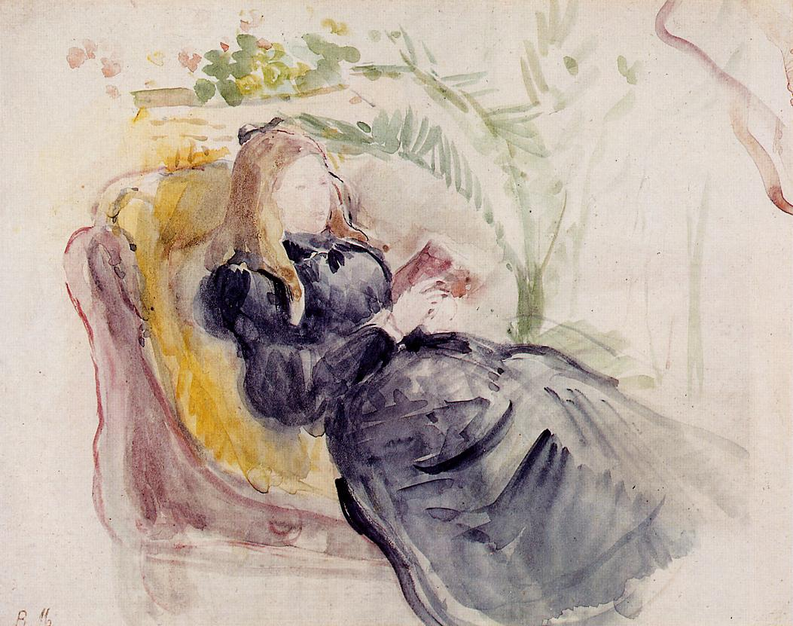

Tags: famous-people, female-portraits
Style: Impressionism
Artist: Morisot Berthe
Title: Julie Manet, Reading in a Chaise Lounge
Year: 1890
Genre: genre painting
Categories: handkerchief (18.5%); book_jacket (9.4%); terrapin (6.0%); scorpion (5.5%); ant (4.1%)